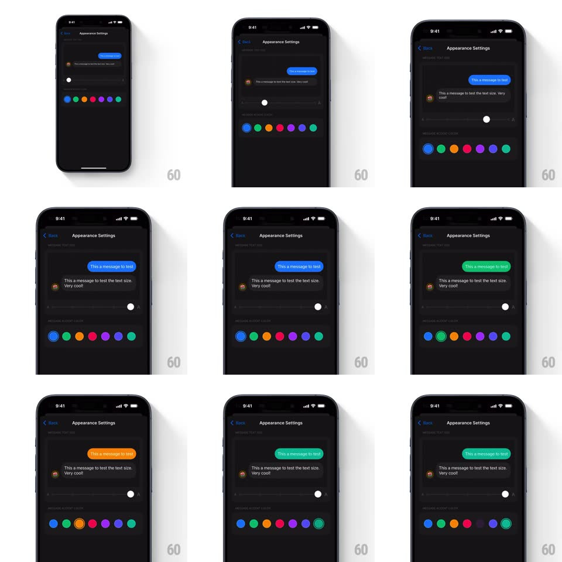

Media
Frame-by-frame

Rebuild this interaction 1:1: Superchat's Appearance Settings - a live chat preview with a text-size slider between small-A and large-A that resizes the sample bubbles as you drag, and a row of color dots that re-themes the outgoing bubble instantly.

Rebuild this interaction 1:1: Superchat's Appearance Settings - a live chat preview with a text-size slider between small-A and large-A that resizes the sample bubbles as you drag, and a row of color dots that re-themes the outgoing bubble instantly. ## Integration Integration: stack-agnostic spec - springs given as stiffness/damping, timed motions as duration + curve; map every value to your framework and animation library of choice. ## Scene A dark "Appearance Settings" page: a chat preview at top (outgoing blue bubble "This a message to test", incoming grey bubble with avatar "This a message to test the text size. Very cool!"), below it a slider track with a white knob between small-A and large-A glyphs, and a row of 7 color dots (blue, green, orange, red, pink, purple, teal); the selected dot carries a dark ring. ## Motion spec Pattern: live-preview slider + instant theming. - Drag the knob: bubble text resizes continuously 1:1 with the knob (no steps); the bubbles re-wrap and their heights spring to fit (spring ~400/24) so the preview never jumps. - Release: the knob snaps to the nearest of ~5 size stops (120ms, ease-out) with the text easing to the snapped size. - Tap a color dot: the outgoing bubble's fill changes instantly (100ms color crossfade) and the selection ring animates to the tapped dot (slide + fade, 200ms). - The knob shows a subtle scale-up while touched (1 -> 1.15) and a soft shadow lift. ## Calibration - Preview updates during the drag, not after - the sample text IS the feedback. - Both bubbles resize (incoming and outgoing); only the outgoing one re-colors. ## Reduced motion Size changes snap between stops; color changes crossfade. ## Don't miss - The slider's small-A/large-A glyphs sit at the track ends, matching the resize direction. - The dark ring on the selected dot has a thin gap between dot and ring - not a solid outline.